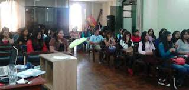
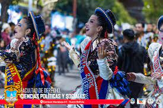

Formando a los lideres y juristas del futuro
Desde 1624, continuamos el legado de la Real y Pontificia Universidad de San Francisco Xavier de Chuquisaca
Conoce nuestra historiaBienvenidos a la página oficial del CED - UNIR
Esta plataforma es el punto de encuentro digital para todos los estudiantes de la carrera de Derecho de la Universidad San Francisco Xavier de Chuquisaca. Nuestro objetivo es promover la transparencia, la participación estudiantil y el acceso a información relevante para nuestro estamento.
¿Qué encontrarás aquí?
Comunicados oficiales
Toda la información relevante sobre actividades y decisiones del centro de estudiantes.
Recursos académicos
Apuntes, material de estudio y banco de preguntas para tu formación.
Defensa estudiantil
Canal seguro para denuncias y asesoramiento sobre tus derechos.
Beneficios
Información sobre becas, descuentos y oportunidades para estudiantes.
Nuestra Carrera de Derecho
Excelencia Académica y profesional
Nos formamos como profesionales pero sobretodo como lideres con sólidos conocimientos jurídicos, ética y compromiso social, siguiendo una tradición de más de 400 años.
Infraestructura
Contamos con bibliotecas, sala de debates, oficinas del Centro y aulas para nuestra formacion como estudiantes
Egresados Destacados
Nuestra facultad ha formado a presidentes, magistrados y destacados juristas que han marcado la historia boliviana.
El Legado de los Universitarios de Charcas
Fundación de la Universidad
La Real y Pontificia Universidad de San Francisco Xavier de Chuquisaca fue fundada, convirtiéndose en uno de los primeros centros de educación superior en el continente.
Centro del Pensamiento
La universidad se convirtió en el principal centro de formación de las élites intelectuales y políticas del Virreinato del Río de la Plata y posteiormente del Alto Peru.
Papel en la Independencia
Los estudiantes y egresados de Derecho jugaron un papel crucial en los movimientos independentistas, siendo conocida como "La Cuna de la Libertad".
Formación de la República
Los juristas formados en Charcas redactaron las primeras constituciones y leyes de las nuevas repúblicas sudamericanas.
Importancia histórica de los universitarios
Los estudiantes y profesionales formados en nuestra universidad han sido protagonistas clave en la historia de Bolivia y América Latina:
- Participación activa en los movimientos independentistas
- Formación de las primeras instituciones republicanas
- Desarrollo del pensamiento jurídico y político latinoamericano
- Liderazgo en los procesos de reforma y modernización del Estado
Nuestra Casa de Estudios


¡Sé parte de esta tradición!
Únete a nuestra comunidad estudiantil y contribuye a mantener vivo el legado de excelencia y compromiso social.
Conoce más sobre nuestro centro